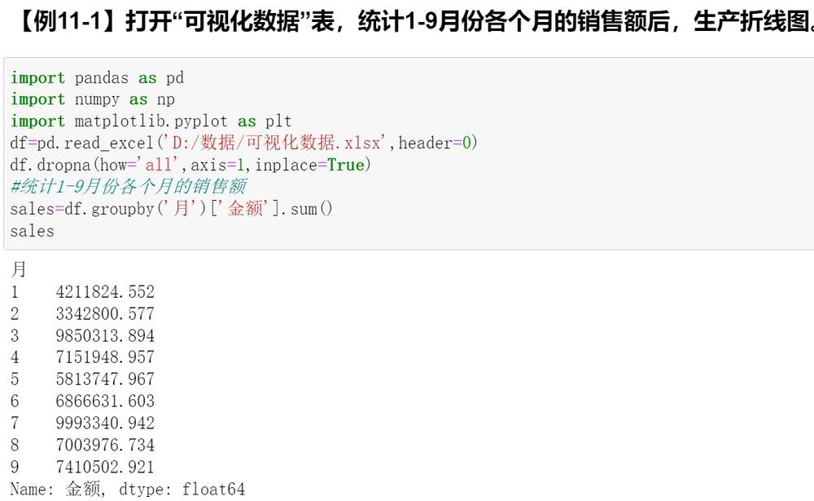
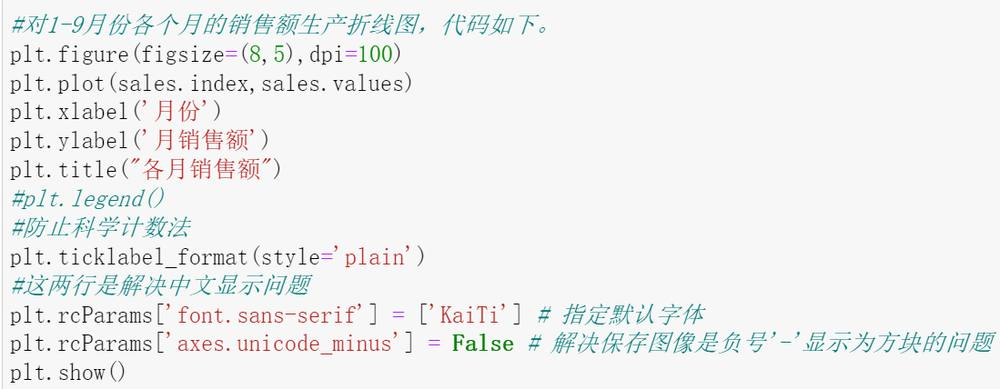
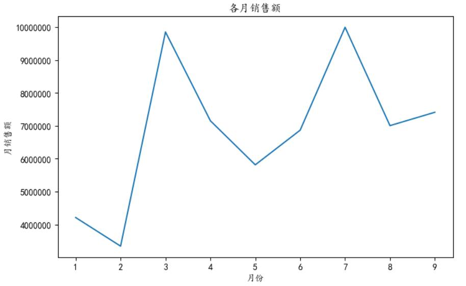
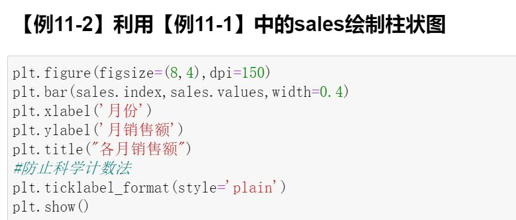
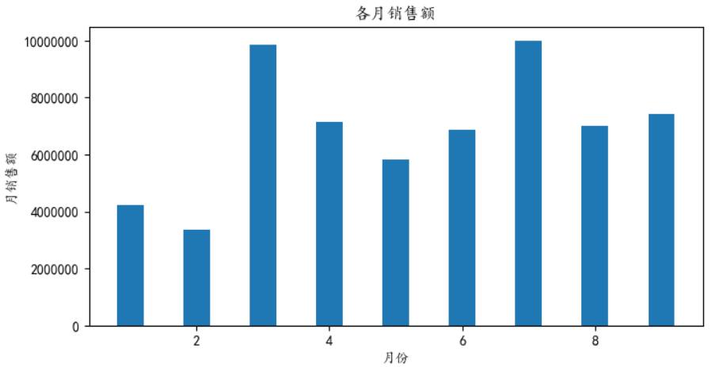
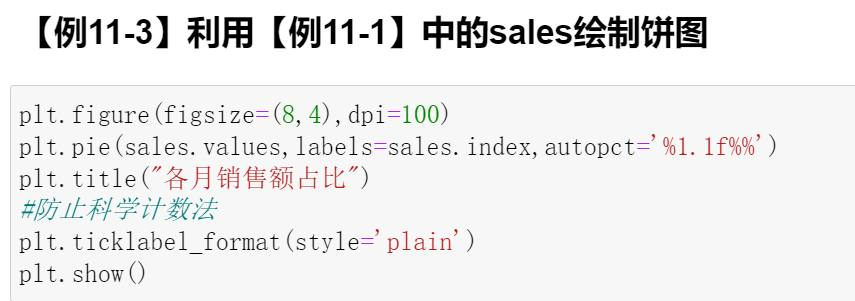
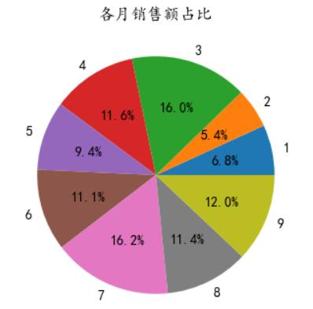
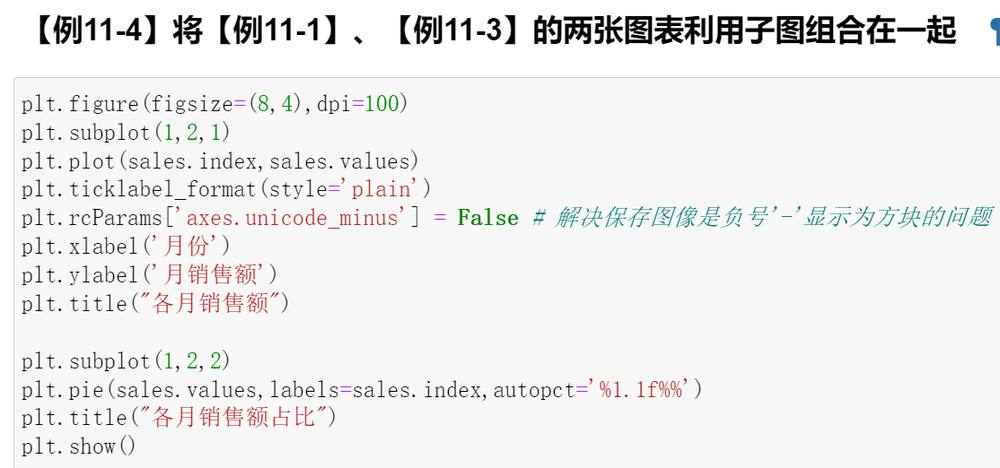
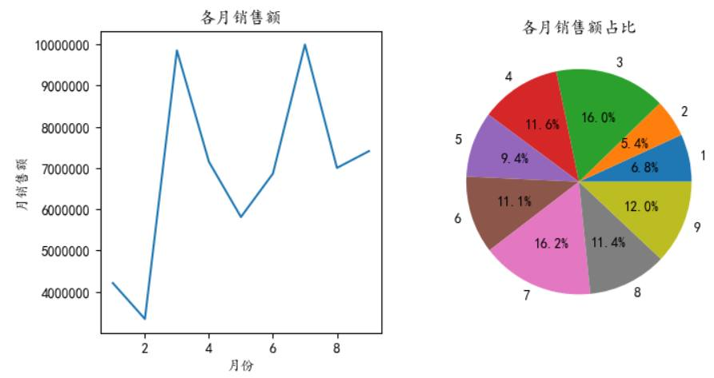

第 1 页 · 11.2.1 绘制折线图
11.2.1 绘制折线图
折线图（ Line Chart ）是一种将数据点按照顺序连接起来的图形。可以看作是将数据点按照 x 轴坐标顺序连接起来的图形。折线图的主要功能是查看因变量 y 随着自变量 x 改变的趋势，最适合用于显示随时间（根据常用比例设置）而变化的连续数据。同时还可以看出数量的差异，増长趋势的变化。pyplot 中绘制折线图的函数为 plot ，其基本使用语法如下。
plt.plot(x,y,linestyle)
其中x表示x轴对应的数据，y表示y轴对应的数据，linestyle表示线条样式。

第 2 页 · 11.2.1 绘制折线图
11.2.1 绘制折线图


第 3 页 · 11.2.2 绘制柱形图
11.2.2 绘制柱形图
柱形图，是统计报告图的一种，由一系列高度不等的纵向条纹或线段表示数据分布的情况，一般用横轴表示数据所属类别，用纵轴表示数量或占比。柱形图一般用于描述分类型数据，每根柱子宽度固定，柱子之间会有间距。在柱形图中，一般将分类型字段设为横坐标，而将统计值设为纵坐标。
pyplot中绘制柱形图的函数为bar（ ）函数，其一般语法如下：
plt.bar(x,height,width,color)
| 参数 | 描述 |
| x | x轴数据 |
| height | y轴数据 |
| width | 柱状的宽度 |
| color | 柱状填充颜色 |
第 4 页 · 11.2.2 绘制柱形图
11.2.2 绘制柱形图


第 5 页 · 11.2.3 绘制饼图
11.2.3 绘制饼图
饼图可以显示一个数据序列（图表中绘制的相关数据点）中各项大小与各项总和的比例每个数据序列具有唯一的颜色，并且与图例中的颜色是对应的。饼图以圆形代表研究对象的整体，用以圆心为共同顶点的各个不同扇形显示各组成部分在整体中所占的比例，一般可用图例表明各扇形所代表的项目的名称及其所占百分比。
pyplot 模块提供了 pie 函数用来绘制饼图，其一般用法为：
plt.pie (x ,explod,labels,color,radius,autopct)
| 参数 | 描述 |
| x | 表示每份饼片的数据 |
| explod | 表示每份饼片边缘偏离半径的百分比 |
| labels | 表示每份饼片的标签 |
| color | 表示每份饼片的颜色 |
| radius | 表示饼图的半径 |
| autopct | 表示数值百分比的样式 |
第 6 页 · 11.2.3 绘制饼图
11.2.3 绘制饼图


第 7 页 · 11.2.4 组合图形的绘制
11.2.4 组合图形的绘制

